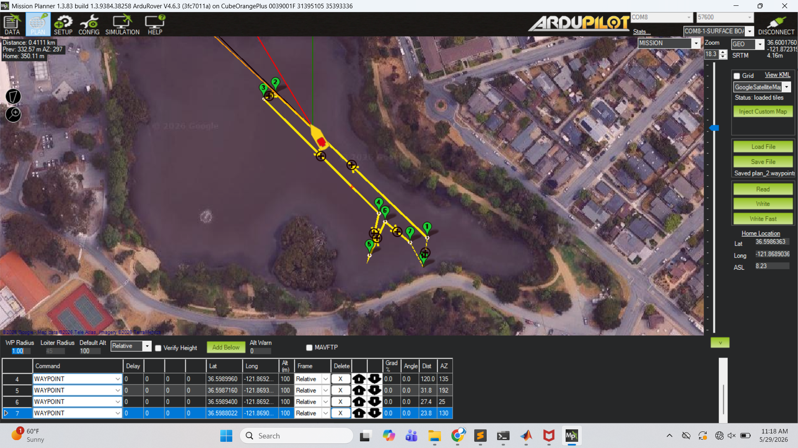

Lab 3 — USV Waypoint Mission Challenge
Week 10 · Spring 2026
Overview
- Use the tuned stabilization layer, from Lab 2, as the foundation for autonomously following a sequence of waypoints with ArduRover’s guidance and navigation stack.
- While the details of the navigation and guidance layers are outside the scope of this class, the general concept of feedback provides insight into how the G and N layers work with the control for USV GNC.
- The motivating objective is a USV race - minimum time to complete a fixed waypoint mission.

Waypoint Mission Challenge
- Minimize course time for a fixed mission
- Mission file:
challengecourse_ay26q3.waypoints— the standard course mission, distributed for upload via Mission Planner.
- Mission file:
- Course time is defined as
- Start: the first time the USV is within the acceptance threshold of waypoint 1.
- End: the first time the USV enters the threshold of the final waypoint.
- Two measurements per run:
- Real-time estimate: recorded by the team in the field using Mission Planner.
- Post-processed estimate (official score): result of analyzing the log files with the provided script
- Real-time estimate: recorded by the team in the field using Mission Planner.


Procedure
Procedure — pre-lab checklist, uploading the mission via Mission Planner, in-water safety, stopwatch protocol, and log capture.
Minimum Viable Deliverable (MVD)
One PowerPoint slide containing:
- Trajectory plot from the log, waypoints overlaid on the actual path.
- Course time, stopwatch and log-derived, side by side.
- Comments/notes on what your team tried to improve on the baseline, and what worked / didn’t work.
Resources
References
- Waypoint Navigation in ArduRover (Boats) — the autopilot reference; conceptual frame for everything in this lab.
- Autopilot → Stabilization Layer — Lab 2 reference. Re-skim because the position controller hands its outputs to the channels you already tuned.
- ArduRover → Rover Tuning Navigation — parameter handbook for the G&N layer.
For Students
- Shared data repository: ME2801_USV_Shared — upload raw
*.BINmission logs to your team subfolder; instructors convert to.mat. - Mission file:
challengecourse_ay26q3.waypoints— the standard course mission, distributed for upload via Mission Planner. - Baseline parameters:
2026_05_29_proto.param— the instructors’ full prototype parameter set. See the Procedure → Configuration Parameter Changes note before loading this; using the file wholesale will overwrite the Lab 2 stabilization-layer tuning.
For Instructors
- Course-time analysis script:
utils/ardu_utils/bin_coursetime.py— reads one or more.BINlogs plus a mission.waypointsfile and reports the log-derived course time (and optionally a trajectory plot). See the Procedure → Post-field section for the recommended invocation.